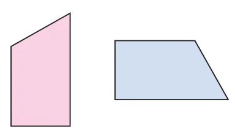
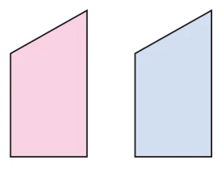
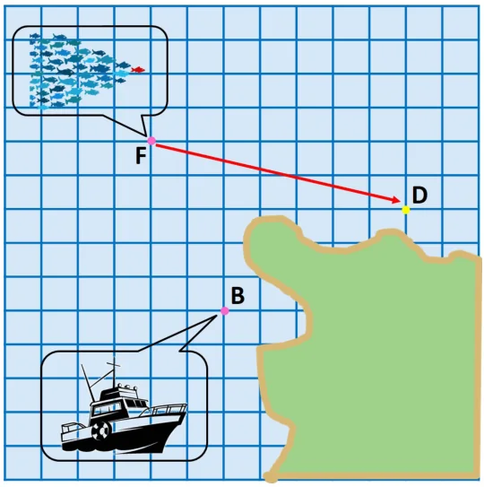
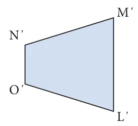
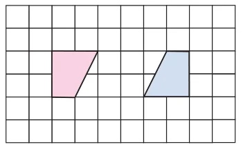
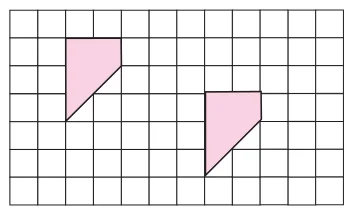
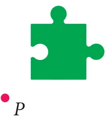
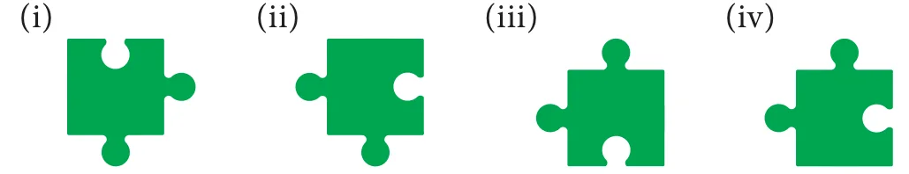

- Find the new position of each point using the translation given.
(i) \(2 \rightarrow,\ 4 \downarrow\) (ii) \(6 \uparrow\) (iii) \(3 \leftarrow,\ 5 \downarrow\) (iv) \(4 \rightarrow,\ 3 \uparrow\)

- How is the pre-image translated to the image?

- Find the image of the given triangle with given translation.
(i) \(4 \uparrow\) (ii) \(6 \rightarrow\ 3 \downarrow\) (iii) \(5 \leftarrow\ 4 \downarrow\) (iv) \(4 \rightarrow\ 3 \uparrow\)

- Reflect the shape with given line of reflection.


- Reflect the shape in each of the following pictures with given line of reflection.


- Rotate the preimages in each case as directed about the green point.
(i) \(90^{\circ}\) clockwise (ii) \(180^{\circ}\) (iii) \(270^{\circ}\) counter clockwise

(iv) \(90^{\circ}\) counter clockwise (v) \(90^{\circ}\) clockwise (vi) \(180^{\circ}\)

Identify the transformation



- A pool of fish translates from point F to point D.

- Describe the translation of the pool of fish.
- Can the fishing boat make the same translation? Explain.
- Describe a translation the fishing boat could make to get to point D.
- Name the transformation that will map footprint A onto the indicated footprint.
- Footprint B
- Footprint C
- Footprint D
- Footprint E

- In given diagram, the blue figure is an image of the pink figure.


- Choose an angle or a vertex from the preimage and name its image.
- List all pairs of corresponding sides.
- In the diagram at the right, the green figure is a translation image of the pink figure. Write a coordinate rule that describes the translation.

Objective type questions.
- A \(\underline{\qquad}\) is a turn about a point.
(i) Translation (ii) Rotation (iii) Reflection (iv) Glide Reflection
- A \(\underline{\qquad}\) is a flip over a line.
(i) Translation (ii) Rotation (iii) Reflection (iv) Glide Reflection
- A \(\underline{\qquad}\) is a slide; move without turning or flipping the shape.
(i) Translation (ii) Rotation (iii) Reflection (iv) Glide Reflection
- The transformation used in the picture is

(i) Translation (ii) Rotation
(iii) Reflection (iv) Glide Reflection
- The transformation used in the picture is

(i) Translation (ii) Rotation
(iii) Reflection (iv) Glide Reflection
- You must rotate the puzzle piece \(270^{\circ}\) clockwise about the point P to fit it into a puzzle. Which piece fits in the puzzle as shown?

